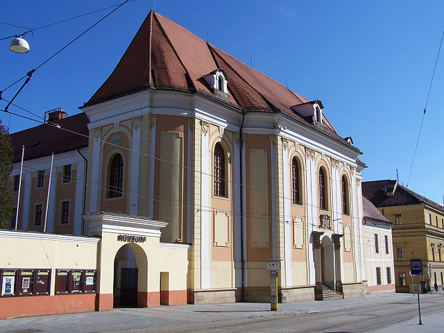

Vlastivědné Muzeum
Vlastivědné muzeum v Olomouci vlastní přes 1 000 000 sbírkových předmětů a z hlediska rozsahu své sbírky se řadí mezi největší muzea v České republice. Sbírkový fond v oblasti společenských i přírodních věd pokrývá nejen střední Moravu, ale i širší území s přesahy do zahraničí. Mimo to vydává periodikum Zprávy Vlastivědného muzea v Olomouci.
Otevirací doba
Úterý - Neděle: 10:00 - 18:00
1 / 1
